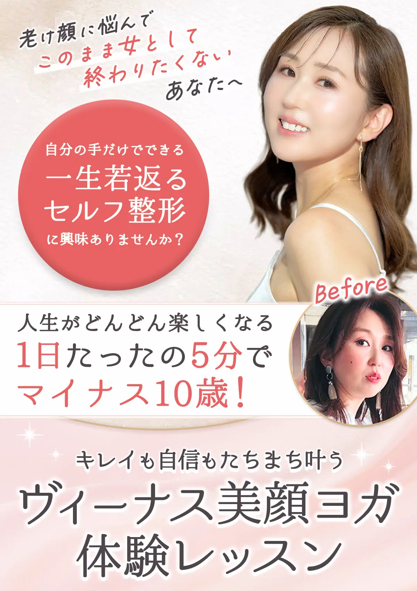
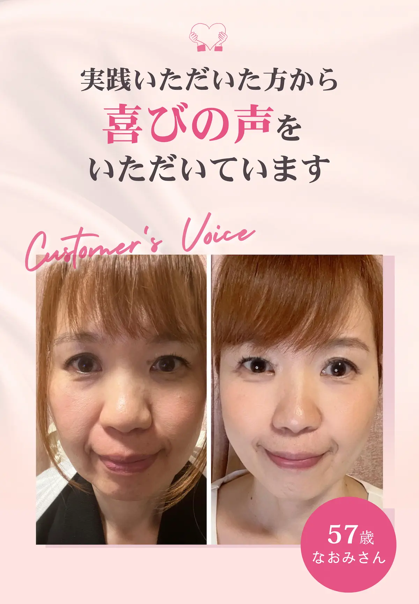
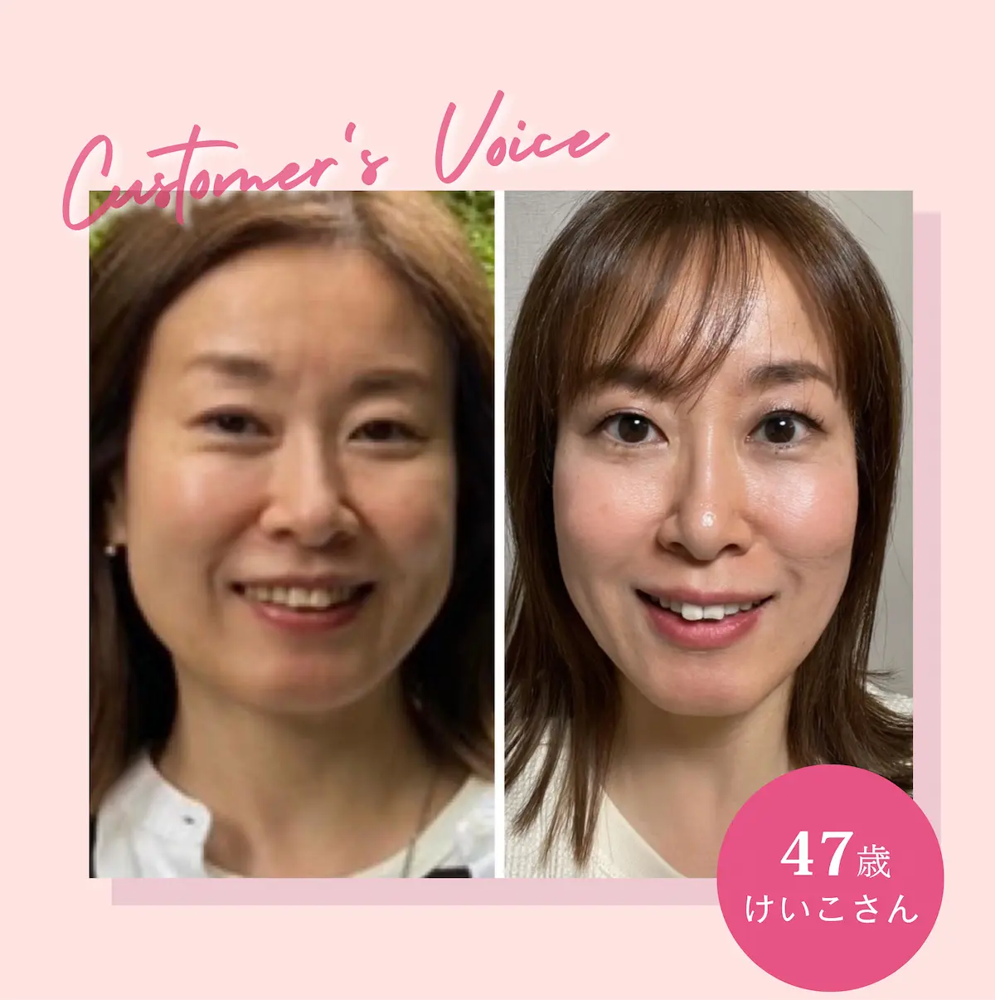
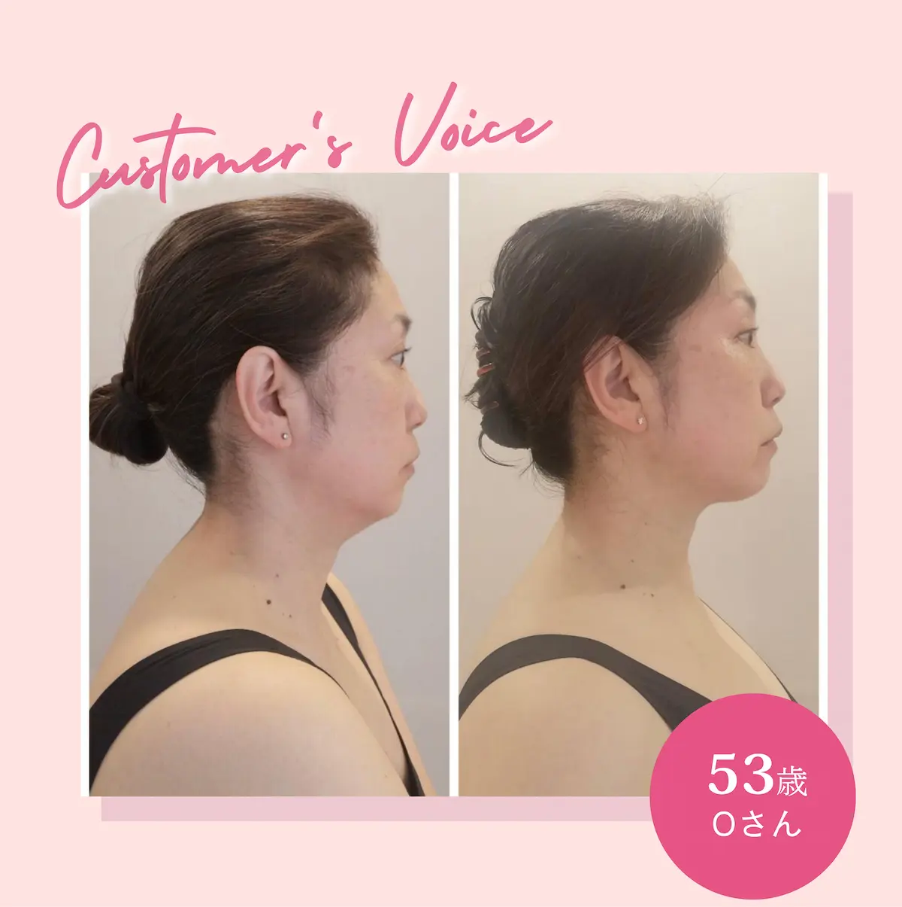
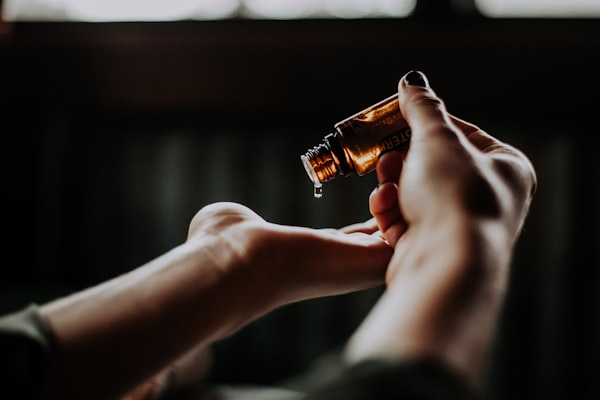
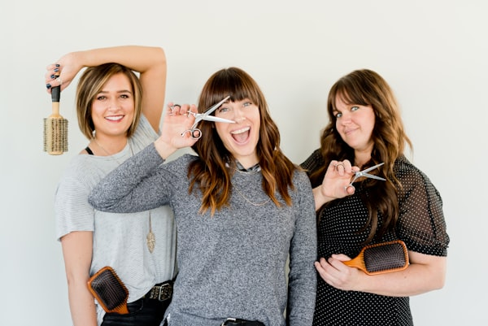
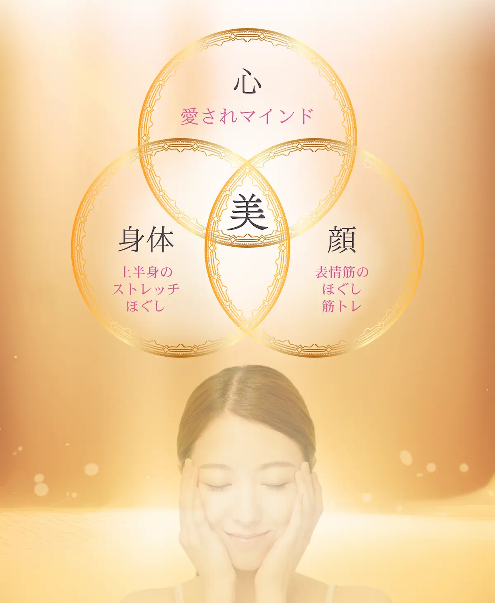
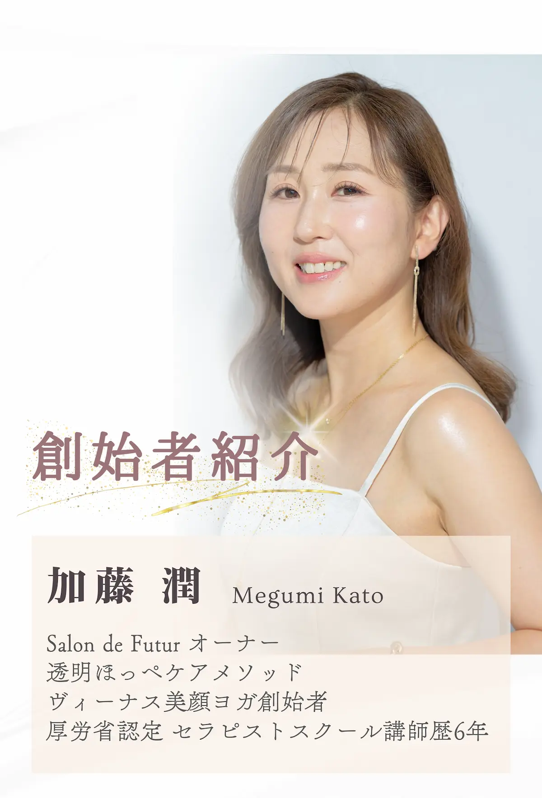
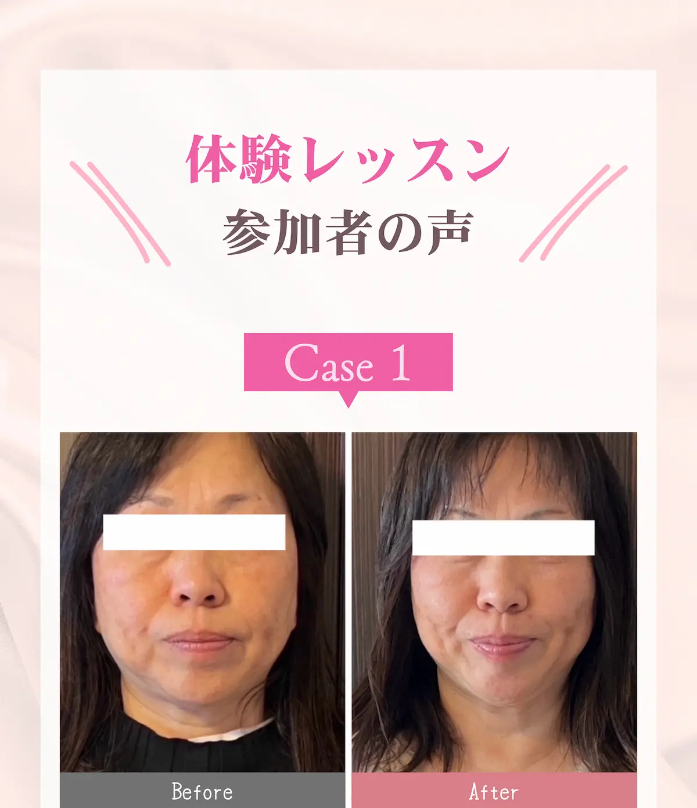
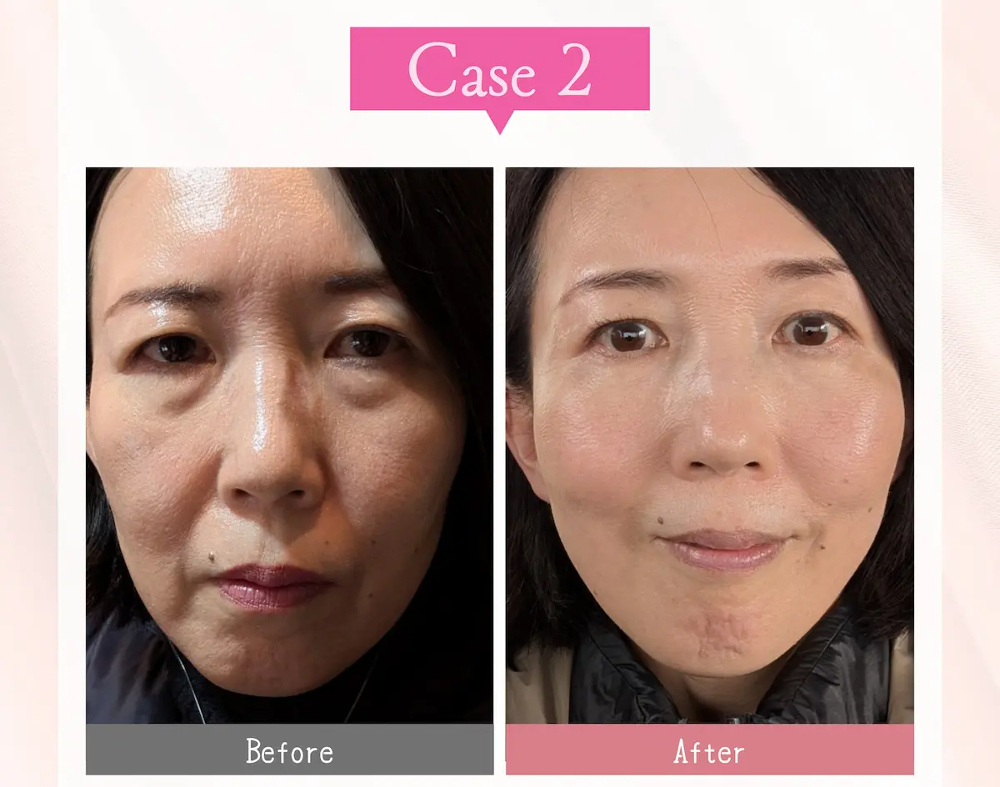

1
お金をかけずに綺麗になれる
一度覚えたら、一生自分でメンテナンスでき、5年先も10年先もずっと美顔をキープし続けることができるメソッドです。
自分の手だけでできるから、
機械も電源も資金も不要！
場所を選ばず、どこでも実践することができます。

Customer's Voice

不意に、ショーウィンドウに映った自分のたるんだ顔を見てショックを受け、「もう年齢的にもしょうがないのかな・・」と半ば諦めていました。
そんなとき、なんとなく見ていたインスタで、美顔ヨガの存在を知り、実践してる方のビフォーアフターに驚愕したんです！
「これなら変われるかも！」
「女性としてまだまだ輝きたい！」
と思い、勇気を出して挑戦しました。
3ヶ月間、コツコツ教えてもらったことを続けてみたら、自分でもわかるくらい顔が激変！
最近では10歳も若く見られることが増えてとっても嬉しいです！
本当に諦めなくて良かったです。
※個人の感想です。

旅行に行った時の、自分の老けた顔の写真を見てショックを受け、更に旦那さんからおばさん扱いされたことが悔しくて、変わりたい！と美顔ヨガサポートレッスンを受講しました。
2週間ほどしてから、フェイスラインがシュッとしてきて、周りの人からも、「痩せた？」って言われるようになりました。
今では旦那さんからも「若返ったね！」と褒められるようになり、勇気を出して一歩踏み出して良かったです！
※個人の感想です。

親の介護や、仕事に終われ、自分の顔を鏡で見ることを忘れてました...
学生時代の友人と久しぶりに会うことになり、改めて鏡を見て自分の老けた姿にショックを受け、慌てて体験レッスンに申し込みました。
毎日スキマ時間に続けただけで、周りから整形疑惑が出るくらい変わりました♪
○十年ぶりに会った友人からも「綺麗になったね！」って褒めてもらい、あの時勇気を出して、チャレンジして本当に良かったです！
※個人の感想です。

写真に映るのが
嫌になった

急激に老けた
気がする

顔が長くなったり
四角くなってきた
鏡に映った自分を見て
ショックを受けた
メイクしても
綺麗に仕上がらない

心も体もしんどくて
思うように動けない

年齢で綺麗を諦めたくない
何歳になっても元気で可愛い女性でいたい
女性としての自信が持てない
あなたのそのお悩み
ヴィーナス美顔ヨガ
✦
目指すのは、あなたが周りから愛され、自分のことも愛せるようになる一生使い続けられる美顔メソッド。
ヴィーナス美顔ヨガは、上半身のストレッチと表情筋をほぐして鍛え、本来のあなたの美しさを引き出すセルフ整形です。
お顔には約30種類の表情筋があり、様々な感情とリンクして連動しています。
表情筋も筋肉なので、使わない筋肉はどんどん衰え、同じ筋肉ばかりを使うと「表情ぐせ」やシワたるみの原因となるのです。
ヴィーナス美顔ヨガで簡単なセルフケアを身につけると、5年後、10年後もこの先ずっと自分でメンテナンスでき、綺麗をキープし続けることができます！
Point
一度覚えたら、一生自分でメンテナンスでき、5年先も10年先もずっと美顔をキープし続けることができるメソッドです。
自分の手だけでできるから、
機械も電源も資金も不要！
場所を選ばず、どこでも実践することができます。
他の顔ヨガ講座では、決まったポーズしか学べない所がほとんどです。ですが、それだけではあなたの悩み解決まですごく時間がかかってしまいます。
ヴィーナス美顔ヨガでは、基本のポーズに加え、あなたが気になる部分に特化した応用ポーズもしっかりレクチャーしますので、変化が早いです。

お顔のたるみの大きな原因である、首肩こりに効果的な上半身のアプローチをしっかり行うことで、慢性的な首肩こりや偏頭痛なども改善され、美しい姿勢を保ちやすくなります。
バストアップや、お腹痩せした方も！
どんなに美容に気を使っていても心の状態が整ってないとお顔は変化しきれません。
心の状態が、表情や肌状態に影響するのはもちろん、険しい感情が表情ぐせとなり、シワやたるみを作り上げてしまいます。
「自分なんて」「もう歳だし」と
諦め癖がついていませんか？
『お顔と心はセット』です！
美顔ヨガでお顔がきれいになると自然と自信もついて笑顔が増え、いろんなことに挑戦できるようになったり、自分のことがもっと好きになったり、自分の人生をより楽しめるようになります！
ヴィーナス美顔ヨガで
見た目も心も欲張りに綺麗になりましょう！

こんにちは。
ヴィーナス美顔ヨガ創始者の加藤 潤です。
私は、現在エステサロンのお仕事の傍ら、オンラインで整形級の若返りが叶う美顔ヨガ講座も行っています。
また、美顔ヨガでお仕事をしたい方のために講師を養成する、愛されヴィーナス塾も主催しており、
現在まで2000名以上の
お客様を美しく変貌させていただきました。
私自身、過去に体調を崩したり、マスク生活が長かったせいで、お顔のたるみに悩み「このまま老け続けるのは絶対嫌だ！」と試行錯誤しながら、セラピストスクール講師やエステティシャンとしての経験を生かし、
表情筋×解剖学と心の関係に着目し、
現在のヴィーナス美顔ヨガが誕生いたしました。
エステサロンに通われていても、美容医療で一時的にお顔が上がっても、続けなければお顔はたるむし、お金も時間もかかってしまう。
Content
たっぷり60分のレッスン
『整形級の美顔を手に入れるために、顔ヨガよりも大切な3つのこと』

更年期で見た目が変わり、家族に「老けたなぁ！」と言われ、自信を無くしてたけど、体験レッスンだけでもお顔が上がったことで、これからの自分の変化が楽しみになりました！
※個人の感想です。

気が付いたらどんどん老け顔になっていて、もう美容医療しかないのかな...って諦めかけてました。
インスタで見かけた美顔ヨガがずっと気になってて、思い切って体験レッスン受けてみたら、家族にも「顔上がったね！」と言われ、勇気を出して一歩踏み出して良かった！って思います。
悩んでる方は、絶対一度は体験してみるのがオススメです♪
※個人の感想です。
Q&A
はい、大丈夫です！体験レッスンに参加される方は、これまでエステや美容に興味はあったけど、踏み出せなかった...という方が多く、私のレッスンをきっかけに美のマインドが上がり、やりたいことを見つけたり、オシャレや恋愛を楽しめるようになった方もたくさんいらっしゃいます。
また、少人数での開催ですので置いてけぼりということもありません。安心してご参加くださいね！
正しく実践して続けていただければ、効果を実感できるはずです。
このメソッドは整形のように『たった1回で激変する』わけではないですが、継続することで徐々に変化していきますし、老けにくいお顔をキープすることもできます。
いいえ、ありません。どの年代の方でもご参加いただけます。
申し訳ございません。女性専用のレッスンとなっておりますので、男性の方はご遠慮ください。
申し訳ありませんが決済後の返金対応はしておりません。